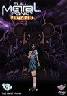

What is this site?
Stephen's Profile
Browser Extension
Stephen Klancher
Recent
Overall
Year Overview
Series
Lists
Full Metal Panic!
List contains: 23 items, 0.4 hours.
Seasons:
1
|
Title Search (4+ characters):
Group:
None
Example Group: Me and Stephen
Who's seen it:
No filter
Everyone
No One
Anyone
Anyone Has Not
Who's commented:
No filter
Everyone
No One
Anyone
Anyone Has Not
Netflix:
No Filter
Available for Instant Watch
Netflix Link Known
Netflix Link Unknown
Missing Data:
No Filter
Runtime
Season
Release Year (YYYY) or Decade (YYYx):
Sort:
Normal
Newest Episodes First
Episodes in Order
Recently Watched First
Watched in Order
Newest Releases First
Releases in Order
Stephen Klancher
...has seen 23
...has seen 0.4 hours
Timeline
Most Recent:
I Want to Protect You

Season 1
I Want to Protect You
Airs on 2002-01-15
S1 - E2 of
Full Metal Panic!
Stephen Klancher
: SEEN
Ranjerî panikku
Airs on 2002-01-22
S1 - E3 of
Full Metal Panic!
Stephen Klancher
: SEEN
Kiddo nappu
Airs on 2002-01-29
S1 - E4 of
Full Metal Panic!
Stephen Klancher
: SEEN
The One Who Whispers
Airs on 2002-02-05
S1 - E5 of
Full Metal Panic!
Stephen Klancher
: SEEN
Still Alive
Airs on 2002-02-12
S1 - E6 of
Full Metal Panic!
Stephen Klancher
: SEEN
Boy Meets Girl
Airs on 2002-02-19
S1 - E7 of
Full Metal Panic!
Stephen Klancher
: SEEN
Part Time Steady
Airs on 2002-02-26
S1 - E8 of
Full Metal Panic!
Stephen Klancher
: SEEN
A Dangerous Safe House
Airs on 2002-03-05
S1 - E9 of
Full Metal Panic!
Stephen Klancher
: SEEN
Run, Running, Ran
Airs on 2002-03-12
S1 - E10 of
Full Metal Panic!
Stephen Klancher
: SEEN
Behemoth Awakens
Airs on 2002-03-19
S1 - E11 of
Full Metal Panic!
Stephen Klancher
: SEEN
One Night Stand
Airs on 2002-03-26
S1 - E12 of
Full Metal Panic!
Stephen Klancher
: SEEN
The Cat and the Kitten's Rock & Roll
Airs on 2002-04-02
S1 - E13 of
Full Metal Panic!
Stephen Klancher
: SEEN
Is Narishino Burning?
Airs on 2002-04-09
S1 - E14 of
Full Metal Panic!
Stephen Klancher
: SEEN
The Rising Wind in the Homeland: Part 1
Airs on 2002-04-16
S1 - E15 of
Full Metal Panic!
Stephen Klancher
: SEEN
The Rising Wind in the Homeland: Part 2
Airs on 2002-04-23
S1 - E16 of
Full Metal Panic!
Stephen Klancher
: SEEN
The Rising Wind in the Homeland: Part 3
Airs on 2002-04-30
S1 - E17 of
Full Metal Panic!
Stephen Klancher
: SEEN
Ocean Party
Airs on 2002-05-07
S1 - E18 of
Full Metal Panic!
Stephen Klancher
: SEEN
Engage, Six-Seven
Airs on 2002-05-14
S1 - E19 of
Full Metal Panic!
Stephen Klancher
: SEEN
Venom's Fire
Airs on 2002-05-21
S1 - E20 of
Full Metal Panic!
Stephen Klancher
: SEEN
Deep Trap
Airs on 2002-05-28
S1 - E21 of
Full Metal Panic!
Stephen Klancher
: SEEN
Jack in the Box
Airs on 2002-06-04
S1 - E22 of
Full Metal Panic!
Stephen Klancher
: SEEN
A Giant's Field
Airs on 2002-06-11
S1 - E23 of
Full Metal Panic!
Stephen Klancher
: SEEN
Into the Blue
Airs on 2002-06-18
S1 - E24 of
Full Metal Panic!
Stephen Klancher
: SEEN
Watched an episode not known by IMDb?
Season:
-
Episode:
Date:
Comment: